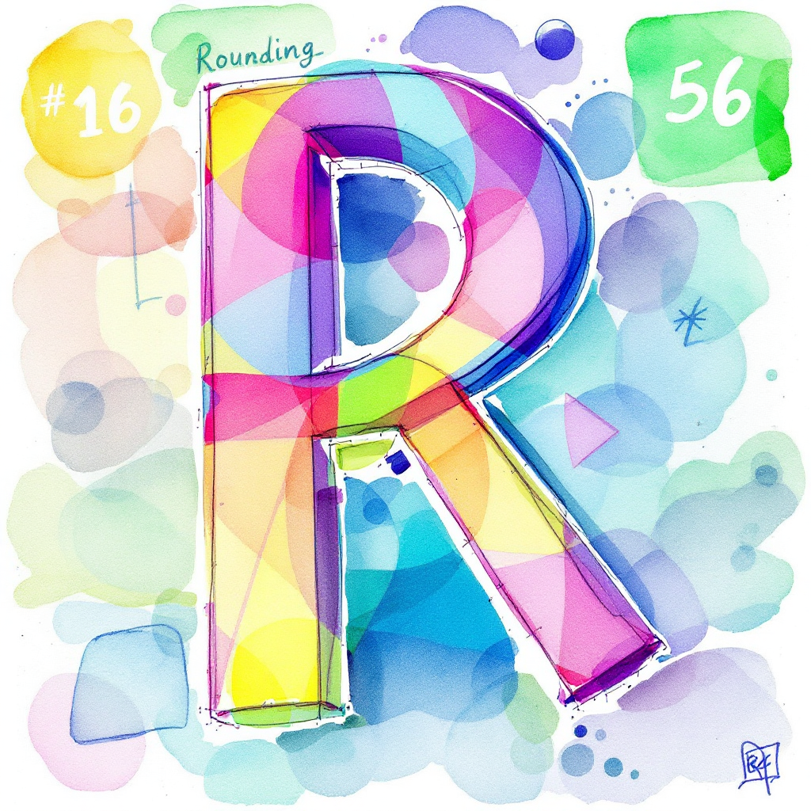

round(3.14159) # Output: 3[1] 3round(), signif(), ceiling(), floor(), and trunc() functions with practical examples.
Steven P. Sanderson II, MPH
December 31, 2024
Programming, Rounding Numbers in R, R Programming Functions, Rounding Functions, Data Analysis in R, Numerical Precision in R, round() function in R, signif() function in R, ceiling() function in R, floor() function in R, trunc() function in R, How to round numbers in R programming, Examples of rounding functions in R, Using ceiling and floor functions in R, Understanding significant digits in R, Best practices for rounding in data analysis with R, R rounding functions, R programming rounding examples, How to round numbers in R, R round() function tutorial, R signif() function examples, R ceiling() vs floor(), R truncation examples, Rounding decimals in R, Rounding integers in R, Rounding techniques in R programming, Rounding for data analysis in R, Rounding edge cases in R, Rounding performance in R, Rounding in R data frames, Rounding for, financial calculations in R
Rounding numbers is a fundamental operation in data analysis and scientific computing. Whether you’re working with financial data, scientific measurements, or large datasets, rounding ensures precision and simplifies results. In R, several functions are available to handle rounding, each tailored to specific needs. This guide will walk you through the most commonly used rounding functions in R—round(), signif(), ceiling(), floor(), and trunc()—with practical examples and real-world applications.
Rounding is the process of reducing the number of digits in a number while keeping its value close to the original. In R, rounding is essential for:
R provides five primary functions for rounding:
round(x, digits = 0): Rounds to the nearest value with a specified number of decimal places.signif(x, digits = 6): Rounds to a specified number of significant digits.ceiling(x): Rounds up to the nearest integer.floor(x): Rounds down to the nearest integer.trunc(x): Truncates the decimal part, effectively rounding towards zero.Each function serves a unique purpose, making it crucial to choose the right one for your task.
round() Functionx: Numeric vector to be rounded.digits: Number of decimal places to round to (default is 0).Rounding to the nearest integer:
Rounding to specific decimal places:
signif() Functionx: Numeric vector to be rounded.digits: Number of significant digits.Rounding to significant digits:
Handling scientific notation:
ceiling() Functionx: Numeric vector to be rounded up.Rounding up positive numbers:
Rounding up negative numbers:
floor() Functionx: Numeric vector to be rounded down.Rounding down positive numbers:
Rounding down negative numbers:
trunc() Functionx: Numeric vector to be truncated.Truncating positive numbers:
Truncating negative numbers:
| Function | Behavior | Example Input | Example Output |
|---|---|---|---|
round() |
Rounds to nearest value | 2.5 | 2 |
signif() |
Rounds to significant digits | 12345.6789 | 12300 |
ceiling() |
Rounds up to nearest integer | 2.3 | 3 |
floor() |
Rounds down to nearest integer | 2.7 | 2 |
trunc() |
Truncates decimal places | -3.9 | -3 |
round(0.5) results in 0, not 1.all.equal() to compare floating-point numbers.Combining Functions:
Rounding in Data Frames:
Problem: Round the following vector using all five functions:
Solution:
x <- c(3.14159, 2.71828, 1.61803, -1.41421, -2.23607)
data.frame(
Original = x,
Rounded = round(x, digits = 2),
Significant = signif(x, digits = 3),
Ceiled = ceiling(x),
Floored = floor(x),
Truncated = trunc(x)
) Original Rounded Significant Ceiled Floored Truncated
1 3.14159 3.14 3.14 4 3 3
2 2.71828 2.72 2.72 3 2 2
3 1.61803 1.62 1.62 2 1 1
4 -1.41421 -1.41 -1.41 -1 -2 -1
5 -2.23607 -2.24 -2.24 -2 -3 -2round(), signif(), ceiling(), floor(), and trunc().Rounding numbers in R is a versatile and essential skill for programmers. By mastering these functions, you can handle a wide range of tasks with precision and confidence. Start applying these techniques in your projects today!
What is the difference between round() and signif()?
round() focuses on decimal places, while signif() targets significant digits.
How does ceiling() handle negative numbers?
It rounds up towards zero.
Can I use rounding functions on data frames?
Yes, use apply() or dplyr for efficient operations.
What happens when rounding 0.5 in R?
R uses “round to even,” so 0.5 rounds to 0.
**Are there alternatives to these functions?
R Documentation: round()
Official documentation for the round() function in R, detailing its syntax, parameters, and behavior. Available at: https://www.rdocumentation.org/packages/base/versions/latest/topics/round
R Documentation: signif()
Official documentation for the signif() function in R, explaining its usage for rounding to significant digits. Available at: https://www.rdocumentation.org/packages/base/versions/latest/topics/signif
R Documentation: ceiling()
Official documentation for the ceiling() function in R, describing its functionality for rounding up to the nearest integer. Available at: https://www.rdocumentation.org/packages/base/versions/latest/topics/ceiling
R Documentation: floor()
Official documentation for the floor() function in R, which rounds down to the nearest integer. Available at: https://www.rdocumentation.org/packages/base/versions/latest/topics/floor
R Documentation: trunc()
Official documentation for the trunc() function in R, explaining its use for truncating decimal places. Available at: https://www.rdocumentation.org/packages/base/versions/latest/topics/trunc
Happy Coding! 🚀

You can connect with me at any one of the below:
Telegram Channel here: https://t.me/steveondata
LinkedIn Network here: https://www.linkedin.com/in/spsanderson/
Mastadon Social here: https://mstdn.social/@stevensanderson
RStats Network here: https://rstats.me/@spsanderson
GitHub Network here: https://github.com/spsanderson
Bluesky Network here: https://bsky.app/profile/spsanderson.com
My Book: Extending Excel with Python and R here: https://packt.link/oTyZJ